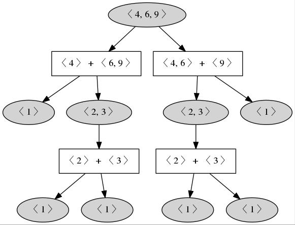
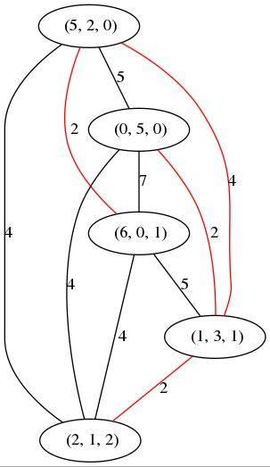
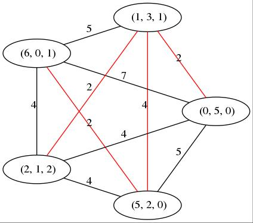

We provide several functions to translate graphs related to numerical and affine semigroups to the dot language. This can either be used with graphviz or any javascript library that interprets dot language. We give the alternative to use DotSplash that uses viz.js.
‣ DotBinaryRelation( br[, opt] ) | ( function ) |
br is a binary relation. Returns a GraphViz dot that represents the binary relation br. The set of vertices of the resulting graph is the source of br. Edges join those elements which are related with respect to br.
gap> br:=BinaryRelationByElements(Domain([1,2]), [DirectProductElement([1,2])]); <general mapping: <object> -> <object> > gap> Print(DotBinaryRelation(br)); digraph NSGraph{rankdir = TB; edge[dir=back]; 1 [label="1"]; 2 [label="2"]; 2 -> 1; }
The argument opt is optional and must be a record. It may include general options regarding the graph, edges and nodes. It may also include specific options for nodes (a function the depends on the node) or edges (a function in two variables to be applied to the nodes connected by the edge). The complete list of options is graph, edge, node (these are general), nodelabel, nodestyle, nodecolor, nodefillcolor, nodeshape, nodefontsize, nodefontcolor (these are for nodes), edgelabel, edgestyle, edgecolor, edgefontsize, edgefontcolor, arrowsize.
gap> d6:=Domain(DivisorsInt(12));; gap> rels6:=Filtered(Tuples(d6,2),a-> a[2] mod a[1]=0);; gap> r6:=BinaryRelationByElements(d6,List(rels6,Tuple));; gap> r6:=HasseDiagramBinaryRelation(r6);; gap> style:=function ( x ) > if IsPrimeInt(x) then > return "filled"; > else > return "solid"; > fi; > return; > end; function( x ) ... end gap> color:=function ( x ) > if x mod 2 = 1 then > return "lightblue"; > else > return "orange"; > fi; > return; > end; function( x ) ... end gap> labele:=function(x,y) > return y/x; > end; function( x, y ) ... end gap> stylee:=function(x,y) > if y/x=2 then > return "dashed"; > else > return "solid"; > fi; > end; function( x, y ) ... end gap> colore:=function(x,y) > if y/x>2 then > return "red"; > else > return "black"; > fi; > end; function( x, y ) ... end gap> Print(DotBinaryRelation(r6, rec(graph:="rankdir=LR", nodestyle:=style, nodecolor:=color, edgelabel:=labele, edgestyle:=stylee, edgecolor:=colore, arrowsize:={x,y}->"0.2"))); digraph NSGraph{ graph [rankdir=LR]; edge [dir=back]; 1 [label="1" style="solid" color="lightblue" ]; 2 [label="2" style="filled" color="orange" ]; 3 [label="3" style="filled" color="lightblue" ]; 4 [label="4" style="solid" color="orange" ]; 5 [label="6" style="solid" color="orange" ]; 6 [label="12" style="solid" color="orange" ]; 2 -> 1 [label="2" style="dashed" color="black" arrowsize="0.2" ]; 3 -> 1 [label="3" style="solid" color="red" arrowsize="0.2" ]; 4 -> 2 [label="2" style="dashed" color="black" arrowsize="0.2" ]; 5 -> 2 [label="3" style="solid" color="red" arrowsize="0.2" ]; 5 -> 3 [label="2" style="dashed" color="black" arrowsize="0.2" ]; 6 -> 4 [label="3" style="solid" color="red" arrowsize="0.2" ]; 6 -> 5 [label="2" style="dashed" color="black" arrowsize="0.2" ]; }
‣ DotTreeOfGluingsOfNumericalSemigroup( S ) | ( function ) |
S is a numerical semigroup. It outputs a tree (in dot) representing the many ways S can be decomposed as a gluing of numerical semigroups (and goes recursively in the factors).
gap> s:=NumericalSemigroup(4,6,9);; gap> Print(DotOverSemigroupsNumericalSemigroup(s)); digraph NSGraph{rankdir = TB; 0 [label="< 4, 6, 9 >"]; 0 [label="< 4, 6, 9 >", style=filled]; 1 [label="< 4 > + < 6, 9 >" , shape=box]; 2 [label="< 1 >", style=filled]; 3 [label="< 2, 3 >", style=filled]; 4 [label="< 2 > + < 3 >" , shape=box]; 5 [label="< 1 >", style=filled]; 6 [label="< 1 >", style=filled]; 7 [label="< 4, 6 > + < 9 >" , shape=box]; 8 [label="< 2, 3 >", style=filled]; 10 [label="< 2 > + < 3 >" , shape=box]; 11 [label="< 1 >", style=filled]; 12 [label="< 1 >", style=filled]; 9 [label="< 1 >", style=filled]; 0 -> 1; 1 -> 2; 1 -> 3; 3 -> 4; 4 -> 5; 4 -> 6; 0 -> 7; 7 -> 8; 7 -> 9; 8 -> 10; 10 -> 11; 10 -> 12; }

‣ DotOverSemigroupsNumericalSemigroup( S ) | ( function ) |
S is a numerical semigroup. It outputs the Hasse diagram (in dot) of oversemigroups of S. Nodes corresponding to irreducible semigroups are filled in gray (pseudo-symmetric in dark gray). Edges are labelled with the special gap added.
gap> s:=NumericalSemigroup(4,6,9);; gap> Print(DotOverSemigroupsNumericalSemigroup(s)); digraph NSGraph{rankdir = TB; edge[dir=back]; node[shape=box,style=rounded] 1 [label="< 1 >", style="rounded,filled"]; 2 [label="< 2, 3 >", style="rounded,filled"]; 3 [label="< 2, 5 >", style="rounded,filled"]; 4 [label="< 2, 7 >", style="rounded,filled"]; 5 [label="< 2, 9 >", style="rounded,filled"]; 6 [label="< 3, 4, 5 >", style="rounded,filled", fillcolor="darkgray"]; 7 [label="< 3, 4 >", style="rounded,filled"]; 8 [label="< 4, 5, 6, 7 >"]; 9 [label="< 4, 5, 6 >", style="rounded,filled"]; 10 [label="< 4, 6, 7, 9 >"]; 11 [label="< 4, 6, 9, 11 >"]; 12 [label="< 4, 6, 9 >", style="rounded,filled"]; 1 -> 2 [label="1" fontsize=10]; 2 -> 3 [label="3" fontsize=10]; 2 -> 6 [label="2" fontsize=10]; 3 -> 4 [label="5" fontsize=10]; 3 -> 8 [label="2" fontsize=10]; 4 -> 5 [label="7" fontsize=10]; 4 -> 10 [label="2" fontsize=10]; 5 -> 11 [label="2" fontsize=10]; 6 -> 7 [label="5" fontsize=10]; 6 -> 8 [label="3" fontsize=10]; 7 -> 10 [label="3" fontsize=10]; 8 -> 9 [label="7" fontsize=10]; 8 -> 10 [label="5" fontsize=10]; 9 -> 11 [label="5" fontsize=10]; 10 -> 11 [label="7" fontsize=10]; 11 -> 12 [label="11" fontsize=10]; }
‣ DotRosalesGraph( n, S ) | ( operation ) |
‣ DotRosalesGraph( n, S ) | ( operation ) |
S is either numerical or an affine semigroup and n is an element in S. It outputs the graph associated to n in S (see GraphAssociatedToElementInNumericalSemigroup (4.1-2)).
gap> s:=NumericalSemigroup(4,6,9);; gap> Print(DotRosalesGraph(15,s)); graph NSGraph{ 1 [label="6"]; 2 [label="9"]; 2 -- 1; }
‣ DotFactorizationGraph( f ) | ( operation ) |
f is a set of factorizations. Returns the graph (in dot) of factorizations associated to f: a complete graph whose vertices are the elements of f. Edges are labelled with distances between the nodes they join. Kruskal algorithm is used to draw in red a spanning tree with minimal distances. Thus the catenary degree is reached in the edges of the tree.
gap> f:=FactorizationsIntegerWRTList(20,[3,5,7]); [ [ 5, 1, 0 ], [ 0, 4, 0 ], [ 1, 2, 1 ], [ 2, 0, 2 ] ] gap> Print(DotFactorizationGraph(f)); graph NSGraph{ 1 [label=" (5, 1, 0)"]; 2 [label=" (0, 4, 0)"]; 3 [label=" (1, 2, 1)"]; 4 [label=" (2, 0, 2)"]; 2 -- 3[label="2", color="red"]; 3 -- 4[label="2", color="red"]; 1 -- 3[label="4", color="red"]; 1 -- 4[label="4" ]; 2 -- 4[label="4" ]; 1 -- 2[label="5" ]; }
‣ DotEliahouGraph( f ) | ( operation ) |
f is a set of factorizations. Returns the Eliahou graph (in dot) of factorizations associated to f: a graph whose vertices are the elements of f, and there is an edge between two vertices if they have common support. Edges are labelled with distances between nodes they join.
gap> f:=FactorizationsIntegerWRTList(20,[3,5,7]); [ [ 5, 1, 0 ], [ 0, 4, 0 ], [ 1, 2, 1 ], [ 2, 0, 2 ] ] gap> Print(DotEliahouGraph(f)); graph NSGraph{ 1 [label=" (5, 1, 0)"]; 2 [label=" (0, 4, 0)"]; 3 [label=" (1, 2, 1)"]; 4 [label=" (2, 0, 2)"]; 2 -- 3[label="2" ]; 3 -- 4[label="2" ]; 1 -- 3[label="4" ]; 1 -- 4[label="4" ]; 1 -- 2[label="5" ]; }
‣ SetDotNSEngine( engine ) | ( function ) |
This function sets the value of DotNSEngine to engine, which must be any of the following "circo","dot","fdp","neato","osage","twopi". This tells viz.js which graphviz engine to use.
gap> SetDotNSEngine("circo"); true
Here is an example with the default dot engine


‣ DotSplash( dots... ) | ( function ) |
Launches a browser and visualizes the dots diagrams provided as arguments. It outputs the html page displayed as a string, and prints the location of the temporary file that contains it.
generated by GAPDoc2HTML